基于海表温度与土壤湿度共同影响的青藏高原夏季气温未来预估
Future Projections of summer Tibetan Plateau temperature based on the combined influence of sea surface temperature and soil moisture
摘要
Abstract
准确预估青藏高原（TP）未来增暖的特征，对区域生态系统稳定和社会经济发展，以及理解青藏高原在调节亚洲季风和更大尺度气候格局中的作用，都至关重要。
Accurate projections of future warming characteristics in the Tibetan Plateau (TP) are essential for regional ecosystem stability and socioeconomic development and for understanding its role in modulating the Asian Monsoon and broader-scale climate patterns.
本研究将基于观测的物理约束——土壤湿度异常与海表温度异常对青藏高原夏季近地面气温（SAT）的协同影响——与近地面气温时空变化的评估相结合，对 CMIP6 模式进行评估并筛选出最优模式。
This study evaluated and selected optimal CMIP6 models by combining an observation-based physical constraint—the synergistic influence of soil moisture anomalies and sea surface temperature anomalies on summer TP surface air temperature (SAT)—with an assessment of SAT spatiotemporal variations.
通过比较四种多模式集合方法，发现随机森林（RF）方法能够最有效地减小历史模拟中的时间和空间偏差，从而为青藏高原夏季近地面气温的未来预估提供更可靠的基础。
Four multi-model ensemble methods were compared, and the random forest (RF) method was found to most effectively reduce temporal and spatial biases in historical simulations, thus providing a more reliable basis for future projections of summer SAT over the TP.
基于10个最优模式的随机森林预估显示，在 SSP1-2.6 情景下，青藏高原在未来近期（2015–2044年）呈显著增暖趋势（0.38°C/10a），但在未来中远期（2045–2100年）增暖趋于停滞（0.03°C/10）。
Based on 10 optimal models, the RF-based projections show that SSP1-2.6 scenario, the TP exhibits significant warming trend (0.38°C/10a) in early-term future (2015–2044) but stagnates (0.03°C/10) during the mid- and long-term future (2045–2100).
在 SSP2-4.5 情景下，青藏高原近地面气温在2015–2070年期间呈显著增暖趋势（0.33°C/10a），随后减缓至0.14°C/10a。
Under the SSP2-4.5 scenario, the TP SAT shows a significant warming trend (0.33°C/10a) during 2015–2070, then slows to 0.14°C/10a.
在 SSP5-8.5 情景下，青藏高原近地面气温在整个2015–2100年期间持续快速增暖（0.60°C/10a）。
Under the SSP5-8.5 scenario, the TP SAT maintains rapid warming (0.60°C/10a) throughout 2015–2100.
与未经优化筛选的18个模式的传统多模式集合平均（MME，即 MME-18）相比，基于随机森林的预估表明未来增暖更强，尤其是在青藏高原西部。
The RF-based projections indicate stronger future warming (particularly in western TP) compared to the conventional multi-model ensemble mean (MME) of non-optimized 18 models (MME-18).
这些结果凸显了未进行适当模式优化时低估青藏高原增暖的风险，表明这一脆弱区域值得特别关注。
These results highlight the risk of underestimating TP warming without proper model optimization, warranting particular attention on this vulnerable region.
1. 引言
1. Introduction
作为对全球气候变化高度敏感的区域，青藏高原（TP）正经历加速增暖1。
As a region highly sensitive to global climate change, the Tibetan Plateau (TP) is experiencing accelerated warming1.
1979–2020年期间，青藏高原年平均气温以每十年0.34°C的速率升高，约为全球增暖速率的两倍2。
During the period 1979–2020, the mean annual temperature over the TP increased at 0.34°C per decade, approximately twice the global warming rate2.
快速增暖对当地生态系统、水资源、农业和基础设施产生显著影响。
The rapid warming significantly impacts local ecosystem, water resources, agriculture, and infrastructure.
此外，青藏高原气候异常在调节亚洲季风和更大尺度气候格局方面发挥关键作用2–10。
Additionally, the TP climate anomalies play a crucial role in modulating the Asian Monsoon and broader-scale climate patterns2–10.
因此，研究青藏高原未来气候变化，对于当地和更大范围的气候预估与适应都至关重要。
Therefore, studying future TP climate change is critical for both the local and broader climate projection and adaptation.
气候模式已被广泛用于模拟历史气候变率和预估气候变率11–15。
Climate models have been widely applied in simulating historical and projected climate variability11–15.
基于耦合模式比较计划（CMIP）的模拟，已有大量研究评估并预估了青藏高原的气候变化16–20。
Based on Coupled Model Intercomparison Project (CMIP) simulations, numerous studies have evaluated and projected climate change over the TP16–20.
多数研究结果表明，青藏高原的增暖趋势将随排放增加而增强19,20。
Most findings indicated that the warming trend of the TP will intensify with increasing emissions19,20.
然而，由于复杂地形放大了模式误差，青藏高原的模拟及未来预估仍存在显著不确定性21,22。
However, significant uncertainties exist in TP simulations and future projections due to amplified model errors caused by complex terrain 21,22.
早期 CMIP 模拟在青藏高原存在冷偏差16,23,24。
Earlier CMIP simulations exhibited cold biases over the TP16,23,24.
尽管 CMIP6 已取得显著进展，能够更真实地再现近地面气温（SAT）的空间分布25，但许多模式在青藏高原仍存在冷偏差26–29。
Although CMIP6 has shown remarkable progress and can more realistically capture the spatial distribution of surface air temperatures (SATs)25, many models still exhibit cold biases in the TP 26–29.
因此，评估 CMIP6 模式的表现，对于可靠预估青藏高原气候至关重要。
Therefore, evaluating CMIP6 model performance is essential for reliable TP climate projections.
目前，青藏高原近地面气温的预估主要依赖多模式集合平均（MME），其对增暖幅度的估计存在相当大的不确定性16,17,19,20,30。
Current projections of SAT over the TP predominantly rely on multi-model ensemble means (MME), which show considerable uncertainties in estimated warming magnitudes16,17,19,20,30.
观测约束方法（例如多模式加权、基于归因的约束和涌现约束）能够有效降低预估不确定性31。
Observational constraint methods (e.g., multi-model weighting, attribution-based constraint, emergent constraint) can effectively reduce projection uncertainty31.
然而，很少有研究采用此类观测约束方法来改进青藏高原的气候预估1,32,33。
However, few studies have employed such observational constraint methods to improve climate projections for the TP 1,32,33.
Zhou 和 Zhang1表明，采用历史归因结果作为约束后，预估的青藏高原增暖幅度显著高于 CMIP5 多模式集合平均的估计，揭示出后者系统性低估了青藏高原气温对人为强迫的响应。
Zhou and Zhang1 demonstrated that using historical attribution results as constraints leads to the projected TP warming magnitude significantly exceeding the CMIP5 MME estimates, revealing that the latter systematically underestimated the TP’s temperature response to anthropogenic forcing.
理想的模式应准确再现观测到的物理关系，这有助于降低预估不确定性34,35。
An ideal model should accurately reproduce observed physical relationships, which can help reduce projection uncertainties 34,35.
这些关系有助于降低气候模式预测和预估中的不确定性36。
These relationships can help reduce uncertainties in predictions and projections of climate models36.
例如，利用观测到的降水—气温关系识别能够正确模拟陆气反馈过程的模式，可有效降低极端气温预估中的不确定性37,38。
For instance, using the observed precipitation-temperature relationship to identify models that correctly simulate land-atmosphere feedback processes, the uncertainties in extreme temperature projections can be effectively reduced 37,38.
热带地区的气温—湿度关系可作为评估模式表现的观测约束39。
The tropical temperature-humidity relationship can serve as an observational constraint for evaluating model performance39.
在模式筛选中，将观测到的关系用作基于物理机制的约束，可有效降低预估不确定性。
Using observed relationships as physics-based constraints for model selection can effectively reduce projection uncertainty.
近期研究发现，东欧—西西伯利亚的土壤湿度异常与黄海—日本海的海表温度异常（SSTA）共同影响青藏高原东部的夏季近地面气温40，从而提供了一种潜在的基于物理机制的约束。
Recently, the combined influence of East European-West Siberian soil moisture anomalies and Yellow-Japan Sea SSTAs was found to regulate summer SATs over the eastern TP40, offering a potential physics-based constraint.
这也引出了关键问题：CMIP6 模式能否准确再现土壤湿度异常与海表温度异常对整个青藏高原夏季近地面气温的共同调节作用？
This also raises critical questions: Can CMIP6 models accurately reproduce the combined modulation of the soil moisture anomalies and SSTAs on summer SATs across the entire TP?
这些基于物理机制的观测约束能否提高青藏高原近地面气温预估的准确性？
Can these physics-based observational constraints improve the accuracy of TP SAT projections?
为提高青藏高原夏季近地面气温预估的可靠性，这些问题值得进一步研究。
These questions warrant investigation to improve the reliability of summer SAT projections over the TP.
2. 数据与方法
2. Data and Methods
2.1 数据
2.1 Data
本研究使用从国家气象信息中心获得的 CN05.1 月平均近地面气温数据集（空间分辨率为0.25°×0.25°），评估 CMIP6 模式的表现41。
This study used the CN05.1 monthly SAT dataset (0.25°×0.25°spatial resolution) obtained from the National Meteorological Information Center to assess the performance of CMIP6 models41.
该数据集已被广泛应用于气候变化研究和模式评估42–45。
This dataset has been extensively applied in climate change studies and model evaluations42–45.
此外，青藏高原区域（73°–105°E、26°–40°N，海拔超过2,000 m）的区域平均夏季近地面气温，与青藏高原89个观测站的夏季近地面气温平均值吻合良好；在1961–2014年期间，两者的相关系数为0.95，证实了该数据集的可靠性。
Moreover, the regionally averaged summer SAT over the TP region (73°–105°E, 26°–40°N, above 2,000 m elevation) shows good agreement with the summer TP SAT average from 89 observational stations in the TP, with a correlation coefficient of 0.95 for the period 1961–2014, confirming its reliability.
本研究还使用了美国国家环境预报中心/美国国家大气研究中心（NCEP/NCAR）提供的位势高度数据（分辨率为2.5°×2.5°）、ERA-land 月尺度土壤湿度数据（0–7 cm土层；分辨率为0.1°×0.1°）46，以及美国国家海洋和大气管理局（NOAA）提供的扩展重建海表温度数据集（第5版；分辨率为2.0°×2.0°）47。
This study also used geopotential heights at 2.5°×2.5° resolution from the National Centers for Environmental Prediction/National Center for Atmospheric Research (NCEP/NCAR), the ERA-land monthly soil moisture (0–7 cm layer; 0.1°×0.1° resolution)46, and the extended reconstructed SST dataset (Version 5; 2.0°×2.0° resolution) obtained from the National Oceanic and Atmospheric Administration (NOAA) 47.
所有数据均提取自1961至2014年。
All data were extracted from 1961 to 2014.
本研究采用了18个具备地形数据的 CMIP6 模式的模拟数据（模式清单见图1a）。
This study employed model-simulated data from 18 CMIP6 models with topographic data (see the list in Fig. 1a).
利用大气温度递减率，对近地面气温数据进行地形订正，使其匹配 CN05.1 网格的地形45。
The SAT data were topographically adjusted to match the CN05.1 grid topography using atmospheric lapse rates45.
我们使用了历史模拟（1961–2014年），以及三种共享社会经济路径（SSP）情景（SSP1-2.6、SSP2-4.5和SSP5-8.5）下的未来预估（2015–2100年）48,49。
We used historical simulations (1961–2014) and future projections (2015–2100) under three Shared Socioeconomic Pathway (SSP) scenarios (SSP1-2.6, SSP2-4.5, and SSP5-8.5) 48,49.
本研究使用的所有 CMIP6 模式输出均来自第一次集合运行（r1i1p1f1），以确保初始条件、物理参数化和边界条件的一致性。
All CMIP6 model outputs used in this study represent the first ensemble run (r1i1p1f1) to ensure consistent initial conditions, physical parameterizations, and boundary conditions.
将1995–2014年指定为基准期，用于未来气候变化的比较分析。
The period 1995–2014 was designated as the baseline period for comparative analysis of future climate change.
除直接评估青藏高原夏季近地面气温外，我们还将土壤湿度异常和海表温度异常的共同作用作为观测约束，评估模式的表现。
Besides direct evaluation of summer TP SATs, we used the combined effect of the soil moisture anomalies and SSTAs as observational constraints to evaluate the performance of models.
因此，我们使用了多种模式输出变量（位势高度、海表温度和表层土壤湿度）。
As such, we used various model output variables (geopotential heights, SSTs, and surface soil moistures).
所有模式变量均通过双线性插值，使其与观测数据集的分辨率相匹配。
All model variables were bilinearly interpolated to match observational dataset resolutions.
2.2. 方法
2.2. Methods
使用 Taylor 图和 Taylor 技巧评分（TSS），定量评估模拟与观测之间的一致性28,50,51。
The Taylor diagram and Taylor skill score (TSS) were used to quantitatively assess the consistency between simulations and observations28,50,51.
年际变率技巧评分（IVS）用于评估模式再现青藏高原夏季近地面气温年际变率的能力52,53。
The interannual variability skill score (IVS) is used to evaluate the ability of models to reproduce the interannual variability of the summer TP SAT 52,53.
我们评估了四种多模式集合方法：传统等权重多模式集合平均（MME）、基于独立性和性能的气候模式加权（ClimWIP）51,54–57、线性回归（LR）51和随机森林（RF）58。
We evaluated four multi-model ensemble approaches: the conventional equal-weight MME, Climate model Weighting by Independence and Performance (ClimWIP)51,54–57, Linear Regression (LR)51, and Random Forest (RF) 58.
为减轻过拟合并评估泛化能力，我们以1961–1994年为训练期、1995–2014年为验证期训练和验证集合模型，并利用均方根误差（RMSE）和决定系数（R2评分）评估其稳健性与表现。
To mitigate overfitting and evaluate generalizability, we train the ensemble models on the period 1961–1994 and validate them on the period 1995–2014, with their robustness and performance assessed using the root mean square error (RMSE) and coefficient of determination (R2 score).
有关上述评估方法和多模式集合方法的详细信息，请参阅补充材料。
For detailed information on the above evaluation and multi-model ensemble methods, please refer to the supplementary material.
3. CMIP6 模式评估
3. Evaluation of CMIP6 models
3.1 青藏高原夏季近地面气温的模拟表现
3.1 Simulation performance for summer SATs over the TP
Taylor 图评估（图1a）表明，全部18个模式均能较合理地模拟青藏高原夏季近地面气温的气候态空间分布。
Taylor diagram evaluation (Fig. 1a) shows that all 18 models reasonably simulate the climatological spatial distribution of summer SATs over the TP.
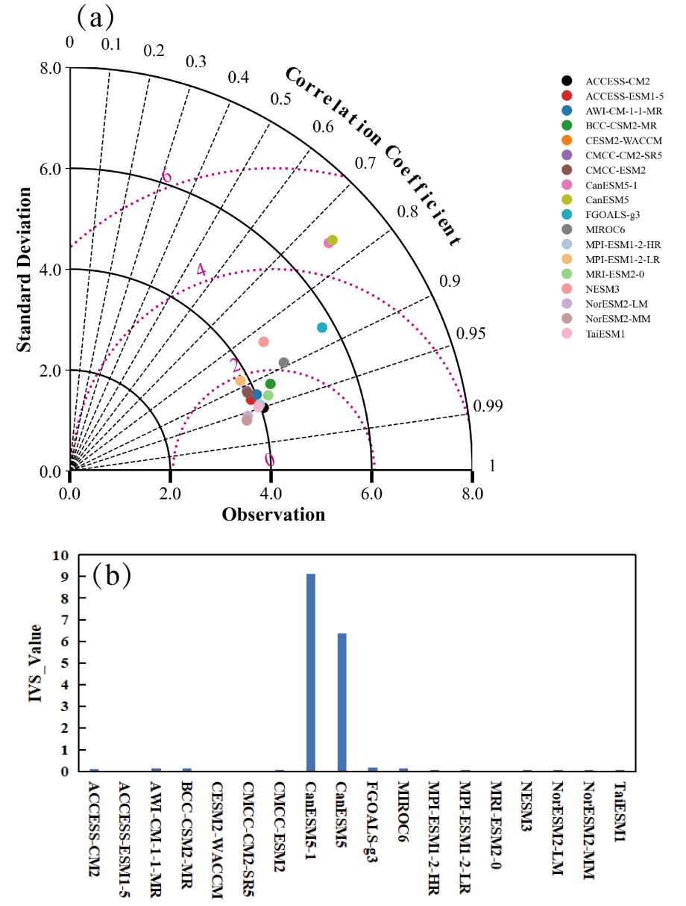
（a）用于评估18个CMIP6模式在历史时期（1961–2014年）对青藏高原夏季近地面气温气候态空间分布模拟能力的Taylor图；（b）这18个模式的年际变率技巧评分（IVS）。
(a) Taylor diagrams for the evaluation of 18 CMIP6 models regarding climatological spatial distribution of summer SATs over the TP during the historical period (1961–2014), (b) Interannual variability skill score (IVS) of the 18 models.
大多数模式模拟的近地面气温分布与观测分布高度一致，相关系数超过0.80。
The simulated SAT distributions in most models show high consistency with the observed distribution, with correlation coefficients exceeding 0.80.
NorESM2-LM、NorESM2-MM、CESM2-WACCM、ACCESS-CM2和TaiESM1在模拟近地面气温空间分布方面表现出色（相关系数>0.95，且TSS>0.89）。
NorESM2-LM, NorESM2-MM, CESM2-WACCM, ACCESS-CM2, and TaiESM1 demonstrated superior performance in simulating the spatial distribution of SATs (correlation coefficients > 0.95 and TSS > 0.89).
相比之下，CanESM5和CanESM5-1的空间模拟技巧相对较差，其空间相关系数较低，TSS评分低于0.40。
In contrast, CanESM5 and CanESM5-1 exhibited relatively poor spatial simulation skills, with lower spatial correlation coefficients and TSS scores below 0.40.
IVS评估（图1b）表明，大多数模式在再现年际变率方面具有较高技巧（IVS<0.20）。
The IVS evaluation (Fig. 1b) shows that most models demonstrated high skills in reproducing the interannual variability (IVS < 0.20).
然而，CanESM5和CanESM5-1的表现明显较弱（IVS>6.0）（图1b），这与它们较差的空间模拟技巧（图1a）一致。
However, CanESM5 and CanESM5-1 exhibited considerably weaker performance (IVS > 6.0) (Fig. 1b), consistent with their poor spatial simulation skills (Fig. 1a).
依据与观测到的青藏高原近地面气温空间型的高度相似性（TSS≥0.8），以及对其年际变化的较强模拟能力（IVS≤0.2），我们筛选出12个最优模式：ACCESS-CM2、ACCESS-ESM1-5、AWI-CM-1-1-MR、BCC-CSM2-MR、CESM2-WACCM、CMCC-CM2-SR5、CMCC-ESM2、MPI-ESM1-2-HR、MRI-ESM2-0、NorESM2-LM、NorESM2-MM和TaiESM1。
Based on high spatial similarity with the observed pattern of TP SAT (TSS ≥ 0.8) and strong simulation capability for the interannual variation of TP SAT (IVS ≤ 0.2), we identified 12 optimal models: ACCESS-CM2, ACCESS-ESM1-5, AWI-CM-1-1-MR, BCC-CSM2-MR, CESM2-WACCM, CMCC-CM2-SR5, CMCC-ESM2, MPI-ESM1-2-HR, MRI-ESM2-0, NorESM2-LM, NorESM2-MM, and TaiESM1.
3.2 利用基于物理机制的观测约束进行评估
3.2 Evaluation by using physics-based observational constraints
东欧平原—西西伯利亚平原的土壤湿度异常与黄海—日本海的海表温度异常，共同调节青藏高原东部夏季近地面气温的多尺度变化40。
The soil moisture anomalies in the East European Plain-West Siberian Plain and SSTAs in the Yellow Sea-Japan Sea jointly modulate multiscale variations of summer SATs over the eastern TP40.
具体而言，东欧平原—西西伯利亚平原的土壤湿度异常，通过局地陆气相互作用调节其上方对流层上层的位势高度，激发向下游传播的 Rossby 波列。
Specifically, soil moisture anomalies in the East European Plain-West Siberian Plain modulate the overlying upper-tropospheric geopotential heights via local land-air interactions, triggering a downstream Rossby wave train.
该波列产生一个从青藏高原东部延伸至黄海和日本海的高压异常，反映出南亚高压增强并向东伸展。
This wave train generates a high-pressure anomaly extending from the eastern Tibetan Plateau to the Yellow and Japan Seas, which reflects an intensified and eastward-extended South Asian High.
海表温度异常通过局地热力强迫加强这一高压异常，最终导致青藏高原东部夏季近地面气温异常。
The SSTAs reinforce this high-pressure anomaly through local thermal forcing and ultimately cause summer SAT anomalies over the eastern TP.
简而言之，这些土壤湿度异常和海表温度异常的共同作用，导致青藏高原东部夏季近地面气温异常40。
In short, the combined effect of these soil moisture and SST anomalies leads to summer SAT anomalies over the eastern TP40.
由于本研究关注整个青藏高原夏季近地面气温的评估与预估，我们计算了1961–2014年青藏高原区域平均近地面气温时间序列，并据此对200 hPa位势高度（图2a）、土壤湿度（图2b）和海表温度异常（图2c）进行回归分析。
Since this study focuses on the evaluation and projection of summer SATs over the entire TP, we calculated the TP regionally averaged SAT time series for the period 1961–2014 and used it to perform regression analyses on 200 hPa geopotential heights (Fig. 2a), soil moistures (Fig. 2b), and SSTAs (Fig. 2c).
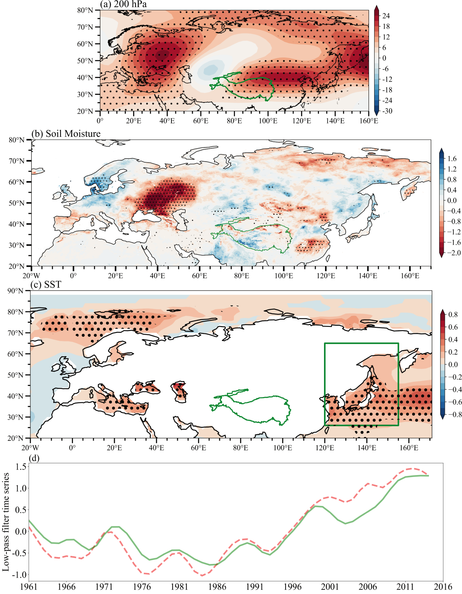
1961–2014年夏季（a）200 hPa位势高度异常（彩色阴影，单位：gpm）、（b）土壤湿度异常（单位：%）和（c）海表温度异常（单位：℃）对同期青藏高原近地面气温指数的回归。
Anomalies of summer (a) 200-hPa geopotential heights (color shadings, units: gpm), (b) soil moisture anomalies (units: %), and (c) SSTAs (units: ℃) regressed against the concurrent TP SAT index during the period 1961–2014.
（d）经9年低通滤波后的观测（红线）和拟合（绿线）青藏高原夏季近地面气温指数标准化时间序列，其中拟合模型采用原始土壤湿度指数（东欧—西西伯利亚平原）和原始海表温度指数（黄海—日本海）构建。
(d) Standardized time series of the observed (red line) and fitted (green line) summer TP SAT index after 9-year low-pass filtering, where the fitting model is constructed using the raw soil moisture index (East European–West Siberian Plain) and the raw SST index (Yellow Sea–Japan Sea).
在（c）中，绿色方框表示黄海—日本海区域。
In (c), the green box denotes the Yellow Sea-Japan Sea region.
在95%置信水平上显著的异常以点状阴影标示。
The anomalies significant at the 95% confidence level are stippled.
绿色等值线表示青藏高原（海拔3000 m）。
The green contours denote the TP (3000 m above sea level).
图2中的所有变量均已去趋势，因为我们期望 CMIP6 模式不仅能捕捉土壤湿度、海表温度与青藏高原近地面气温同时发生的变化趋势，还能准确再现历史时期（1961–2014年）土壤湿度异常和海表温度异常对青藏高原近地面气温的多尺度调节作用。
All variables in Fig. 2 have been detrended, since we expect CMIP6 models to not only capture the simultaneous variation trends of soil moistures, SSTs, and TP SAT, but also to accurately reproduce the multiscale modulation of soil moisture anomalies and SSTAs on TP SAT during the historical period (1961–2014).
与较高的青藏高原近地面气温相对应，一个正—负—正异常波列从东欧延伸至青藏高原—日本海区域（图2a）。
Corresponding to higher TP SAT, a positive-negative-positive wave train extends from eastern Europe to the TP-Japan Sea region (Fig. 2a).
东欧平原—西西伯利亚平原出现显著的土壤湿度负异常（图2b），黄海—日本海出现显著的海表温度正异常（图2c）。
Significant negative soil moisture anomalies appear in the East European Plain-West Siberian Plain (Fig. 2b), and significantly positive SSTAs occur in the Yellow Sea-Japan Sea (Fig. 2c).
这些异常可激发并维持从东欧至青藏高原—日本海区域的波列，导致青藏高原上空出现位势高度正异常（反映出南亚高压更强且偏向东北），进而使青藏高原夏季近地面气温升高。
These anomalies can excite and maintain the wave train from eastern Europe to the TP-Japan Sea region, leading to positive geopotential height anomalies over the TP (reflecting a stronger and northeastward South Asian high) and thereby causing higher summer TP SAT.
这些结果与 Zhang 等40的研究一致。
These results are consistent with Zhang et al40.
将200 hPa位势高度异常、土壤湿度异常和海表温度异常对原始（即未去趋势的）青藏高原近地面气温时间序列进行回归，得到的空间型与图2a–c中的相似，但关键区域的显著性水平更高（图略）。
The 200-hPa geopotential height, soil moisture, and SST anomalies regressed upon the raw (i.e., non-detrended) TP SAT time series show similar spatial patterns to those in Fig. 2a–c, but with higher significance levels in the key regions (Fig.omitted).
基于原始土壤湿度指数（东欧—西西伯利亚平原）与原始海表温度指数（黄海—日本海）的拟合模型，成功再现了观测到的青藏高原近地面气温的年代际变率和趋势（图2d）。
The interdecadal variability and trend of the observed TP SAT are successfully captured by a fitting model based on the raw soil moisture index (East European–West Siberian Plain) and the raw SST index (Yellow Sea–Japan Sea) (Fig. 2d).
低通滤波后的观测时间序列与重建时间序列之间的相关系数达到0.95，并通过了99%置信水平的 Monte Carlo 检验。
The correlation coefficient between the low-pass-filtered observed and reconstructed time series reaches 0.95, passing a Monte Carlo test at the 99% confidence level.
这表明，这些关键区域的土壤湿度异常和海表温度异常，共同调节整个青藏高原近地面气温的年代际变率和趋势。
This indicates that the soil moisture anomalies and SSTAs in these key regions collectively regulate the interdecadal variability and trend of the SAT across the entire TP.
这种共同调节机制可用作观测约束。
This collective modulation mechanism can be used as an observational constraint.
为评估 CMIP6 模式能否再现历史时期（1961–2014年）土壤湿度异常和海表温度异常对青藏高原近地面气温的多尺度调节作用，200 hPa位势高度（图3）、土壤湿度（图4）和海表温度异常（图5）回归分析中的所有变量均已去趋势。
To assess whether CMIP6 models can reproduce the multiscale modulation of soil moisture anomalies and SSTAs on TP SAT during the historical period (1961–2014), all variables in the regression analyses of 200 hPa geopotential heights (Fig. 3), soil moistures (Fig. 4), and SSTAs (Fig. 5) have been detrended.
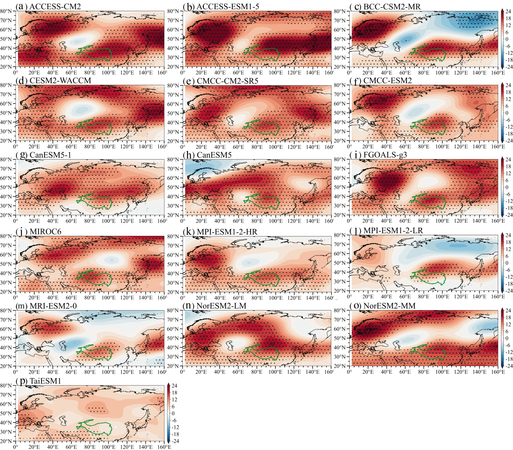
基于CMIP6模式，将1961–2014年夏季200 hPa位势高度异常（彩色阴影，单位：gpm）对同期青藏高原近地面气温指数进行回归。
Anomalies of summer 200-hPa geopotential heights (color shadings, units: gpm) regressed against the concurrent TP SAT index, based on the CMIP6 models during 1961–2014.
在95%置信水平上显著的异常以点状阴影标示。
The anomalies significant at the 95% confidence level are stippled.
绿色等值线表示青藏高原（海拔3000 m）。
The green contours denote the TP (3000 m above sea level).
在这些图中，NESM3和AWI-CM-1-1-MR被排除，因为它们未提供历史模拟的土壤湿度数据。
In these Figs., NESM3 and AWI-CM-1-1-MR were excluded since they do not provide historical simulated soil moisture data.
大多数模式成功模拟出青藏高原上空显著的位势高度正异常，并准确再现了从欧洲传播至青藏高原区域的波列。
Most models successfully simulated the significant positive geopotential height anomalies over the TP and accurately reproduced the wave train propagating from Europe to the TP region.
然而，CanESM5-1（图3g）和CanESM5（图3h）没有呈现清晰的波列。
However, CanESM5-1 (Fig. 3g) and CanESM5 (Fig. 3h) showed no clear wave train.
TaiESM1（图3p）甚至未呈现青藏高原上空显著的位势高度正异常。
TaiESM1 (Fig. 3p) even showed no significant positive geopotential height anomaly over the TP.
我们还检验了各模式中对青藏高原近地面气温时间序列回归得到的土壤湿度异常（图4）。
We also examined soil moisture anomalies regressed against the TP SAT time series for each model (Fig. 4).
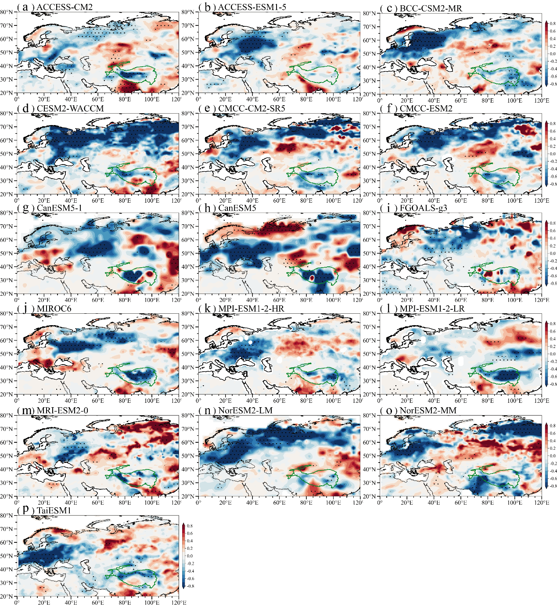
与图3相同，但这里显示的是夏季土壤湿度异常。
As in Fig.3, but for summer soil moisture anomalies.
大多数模式捕捉到了欧洲和西伯利亚一带显著的土壤湿度负异常，尽管其位置与观测（图2b）有一定差异。
Most models capture significant negative soil moisture anomalies around Europe and Siberia, although the locations differ somewhat from observations (Fig. 2b).
此外，土壤湿度负异常通常与其上方对流层中的位势高度正异常对应良好。
Furthermore, the negative soil moisture anomalies generally correspond well with the positive geopotential height anomalies in the overlying troposphere.
例如，在 ACCESS-ESM1-5 中（图4b），显著土壤湿度负异常的位置与观测（图2b）相似。
For instance, in ACCESS-ESM1-5 (Fig. 4b), the location of significant negative soil moisture anomalies resembles that in the observation (Fig. 2b).
相应地，东欧上空出现位势高度正异常（图3b），其位置与观测（图2a）高度一致。
Correspondingly, a positive geopotential height anomaly appears over eastern Europe (Fig. 3b), with a location highly consistent with the observation (Fig. 2a).
然而，在 BCC-CSM2-MR（图4c）和NorESM2-MM（图4o）中，显著土壤湿度负异常的位置相较于观测（图2b）向西北偏移。
However, in BCC-CSM2-MR (Fig. 4c) and NorESM2-MM (Fig. 4o), significant negative soil moisture anomalies shift northwestward compared to the observations (Fig. 2b).
因此，显著位势高度正异常的中心也向西北偏移（图3c,o），与这两个模式中土壤湿度异常的位置一致。
As such, the center of significant positive geopotential height anomalies also shifts northwestward (Fig. 3c,o), aligning with the locations of soil moisture anomalies in the two models.
尽管位置略有差异，大多数模式仍再现了从欧洲至青藏高原的波列，这些波列对青藏高原夏季近地面气温异常有所贡献。
Despite slight location differences, most models still reproduce the wave trains from Europe to the TP, which contribute to the summer TP SAT anomaly.
然而，MPI-ESM1-2-LR 在欧洲模拟出的土壤湿度负异常很弱，且不显著（图4l）。
However, MPI-ESM1-2-LR showed very weak, insignificant negative soil moisture anomalies over Europe (Fig. 4l).
相应地，该区域未出现显著的位势高度正异常（图3l）。
Correspondingly, no significant positive geopotential height anomalies appear over this region (Fig. 3l).
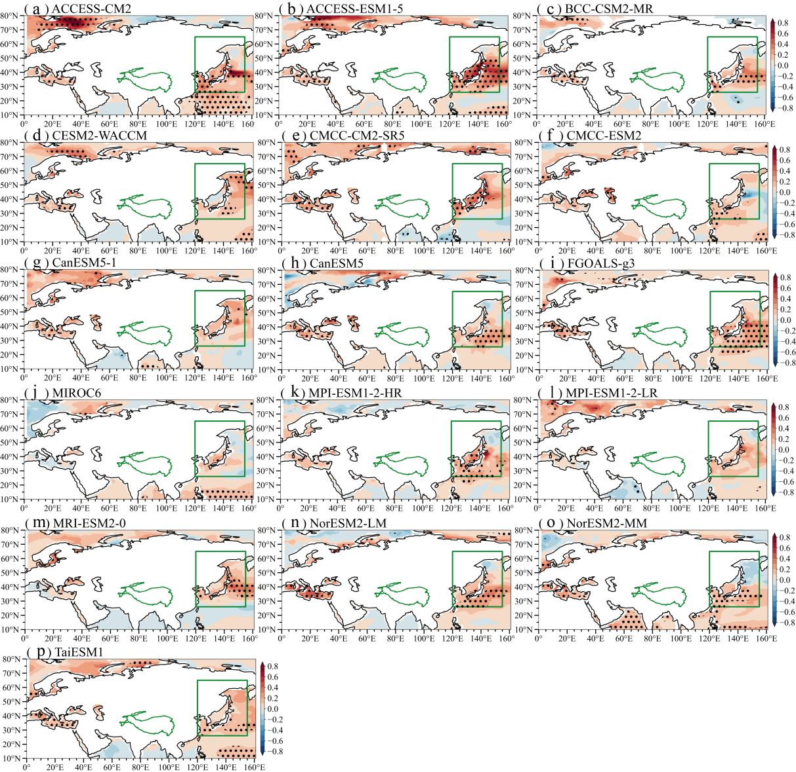
与图3相同，但这里显示的是夏季海表温度异常。
As in Fig. 3, but for summer SSTAs.
绿色方框表示黄海—日本海区域。
The green box denotes the Yellow Sea–Japan Sea region.
大多数模式成功模拟出与较高青藏高原近地面气温相联系的黄海—日本海区域显著海表温度正异常，这与观测（图2c）一致。
Most models successfully simulate significant positive SSTAs in the Yellow Sea–Japan Sea region associated with higher TP SAT, which is consistent with observations (Fig. 2c).
CanESM5-1、MIROC6和MPI-ESM1-2-LR 在该区域呈现的海表温度异常较弱且不显著。
CanESM5-1, MIROC6, and MPI-ESM1-2-LR showed weak and insignificant SSTAs in this region.
基于物理机制的观测约束（即土壤湿度异常与海表温度异常的共同作用），我们筛选出11个最优模式：ACCESS-CM2、ACCESS-ESM1-5、BCC-CSM2-MR、CESM2-WACCM、CMCC-CM2-SR5、CMCC-ESM2、FGOALS-g3、MPI-ESM1-2-HR、MRI-ESM2-0、NorESM2-LM和NorESM2-MM。
Based on physics-based observational constraints (i.e., the combined effect of soil moisture anomalies and SSTAs), we identified 11 optimal models: ACCESS-CM2, ACCESS-ESM1-5, BCC-CSM2-MR, CESM2-WACCM, CMCC-CM2-SR5, CMCC-ESM2, FGOALS-g3, MPI-ESM1-2-HR, MRI-ESM2-0, NorESM2-LM, and NorESM2-MM.
我们还研究了对原始（即未去趋势的）青藏高原近地面气温时间序列回归得到的200 hPa位势高度异常、土壤湿度异常和海表温度异常（见补充图1–3）。
We also investigated the 200-hPa geopotential height, soil moisture, and SST anomalies regressed upon the raw (i.e., non-detrended) TP SAT time series (see supplementary Figs. 1–3).
结果表明，这些物理表现较好的模式呈现出与图3–5相似的空间形态。
The results reveal that these physically better-performing models show similar spatial patterns to those in Figs. 3–5.
相比之下，物理表现较差的模式（例如CanESM5-1、CanESM5和TaiESM1）未能捕捉到该波列。
In contrast, the physically poorer-performing models (e.g., CanESM5-1, CanESM5, and TaiESM1) fail to capture the wave train.
这11个模式中有10个与基于TSS和IVS标准的筛选结果一致，只有FGOALS-g3的TSS相对较低。
Ten of the 11 models align with the selection based on the TSS and IVS criteria, with only FGOALS-g3 having a relatively low TSS.
这一结果意味着，能够再现土壤湿度异常和海表温度异常对青藏高原夏季近地面气温共同影响的模式，往往能更准确地模拟青藏高原近地面气温（获得较高的Taylor和IVS评分）。
This result implies that the models reproducing the combined effects of soil moisture anomalies and SSTAs on summer TP SAT tend to more accurately simulate the TP SAT (achieving high Taylor and IVS scores).
相比之下，未能再现这一物理联系的模式表现较差。
In contrast, those that fail to reproduce the physical link perform poorly.
基于物理机制的约束与Taylor和IVS评分之间的这种相互验证，增强了模式的可信度。
This mutual verification between physics-based constraints and Taylor and IVS scores enhances model credibility.
因此，基于所有这些标准，我们最终确定了10个最优模式：ACCESS-CM2、ACCESS-ESM1-5、BCC-CSM2-MR、CESM2-WACCM、CMCC-CM2-SR5、CMCC-ESM2、MPI-ESM1-2-HR、MRI-ESM2-0、NorESM2-LM和NorESM2-MM。
Therefore, based on all these criteria, we ultimately identified 10 optimal models: ACCESS-CM2, ACCESS-ESM1-5, BCC-CSM2-MR, CESM2-WACCM, CMCC-CM2-SR5, CMCC-ESM2, MPI-ESM1-2-HR, MRI-ESM2-0, NorESM2-LM, and NorESM2-MM.
除非另有说明，后续所有多模式集合分析均基于这10个优选模式。
Unless otherwise specified, all subsequent multi-model ensemble analyses are derived from the 10 optimally selected models.
3.3 多模式集合方法的评估
3.3 Evaluation of multi-model ensemble methods
我们采用不同的集合方法，在训练阶段（1961–1994年）建立基础模型或回归模型，并在验证阶段（1995–2014年）评估其表现。
We use different ensemble methods to establish the base or regression models during the training phase (1961–1994) and assess their performance during the validation phase (1995–2014).
与其他方法相比，随机森林（RF）方法与观测结果最为一致，具有最低的RMSE（0.69）和最高的R²（0.96）（表1）。
Relative to the other methods, the RF approach demonstrates the best agreement with the observation, with the lowest RMSE (0.69) and highest R2 (0.96) (Table 1).
线性回归（LR）方法次之（RMSE = 0.96，R² = 0.92）（表1）。
The LR method is the second best (RMSE = 0.96, R2 = 0.92) (Table 1).
多模式集合平均（MME）方法表现最差。
The MME method performs the worst.
不过，由10个最优模式构成的多模式集合平均（MME-10）优于18个模式的多模式集合平均（MME-18），其RMSE更低（1.16）、R²更高（0.91），表明模式筛选是有效的。
Nevertheless, the MME of the 10 optimal models (MME-10) outperforms the MME of 18 models (MME-18), with a lower RMSE (1.16) and a higher R2 (0.91), demonstrating the effectiveness of model selection.
表1. 多模式集合方法的评估结果。
Table 1. The assessment results of multi-model ensemble methods.
| MME-18 | MME-10 | LR | ClimWIP | RF | |
|---|---|---|---|---|---|
| R2 | 0.85 | 0.91 | 0.92 | 0.92 | 0.96 |
| RMSE | 1.59 | 1.16 | 0.96 | 1.07 | 0.69 |
所有多模式集合方法均成功捕捉到青藏高原夏季近地面气温气候平均值的空间分布（图6b、d、f、h和j），与观测结果（图6a）高度一致。
All multi-model ensemble methods successfully capture the spatial distribution of climatological mean summer SATs over the TP (Fig. 6b, d, f, h, and j), showing a high consistency with the observation (Fig. 6a).
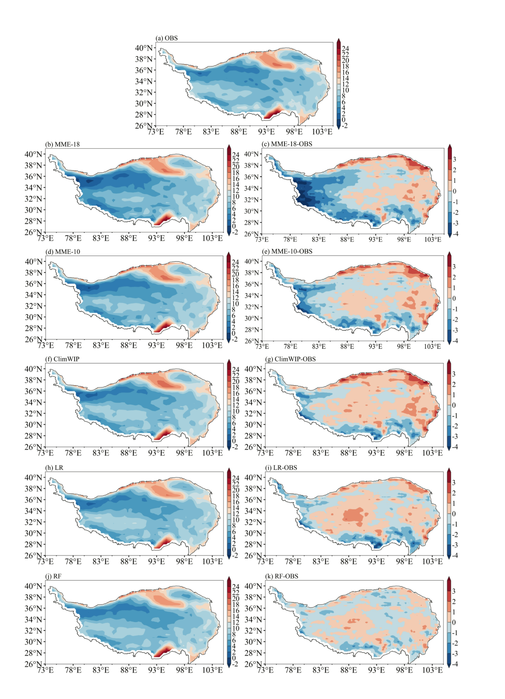
1995–2014年青藏高原夏季近地面气温气候平均值的空间分布，分别对应（a）观测、（b）MME-18、（d）MME-10、（f）ClimWIP、（h）LR和（i）RF。
Spatial distribution of climatological mean summer SATs over the TP 1995–2014 for (a) observation, (b) MME-18, (d) MME-10, (f) ClimWIP, (h) LR, and (i) RF.
（c）、（e）、（g）、（i）和（k）显示不同多模式集合方法的偏差，以集合结果减去观测的差值计算（单位：℃）。
(c), (e), (g), (i), and (k) display biases of different multi-model ensemble methods, calculated as ensemble-minus-observation differences (units: ℃).
然而，各多模式集合结果与观测近地面气温之间的差值呈现出明显差异（图6c、e、g、i和k）。
However, the differences between the multi-model ensemble and observed SATs display substantial discrepancies (Fig. 6c, e, g, i, and k).
MME-18在青藏高原西部呈现出最强、范围最广的冷偏差（图6c）。
The MME-18 exhibits the strongest and most extensive cold biases in the western TP (Fig. 6c.)
对于MME-10，青藏高原西部的冷偏差在一定程度上有所减小（图6e），验证了模式筛选的有效性。
For the MME-10, the cold biases in the western TP have been to some extent decreased (Fig. 6e), verifying model selection validity.
在所有集合方法中，RF与观测近地面气温最为一致，呈现的是较小、零散的冷偏差或暖偏差，而非大范围的系统性偏差（图6k）。
Among all ensemble methods, the RF yields the best agreement with the observed SATs, with smaller, scatter cold/warm biases rather than large-scale systematic biases (Fig. 6k).
自20世纪90年代以来，青藏高原夏季近地面气温显著升高（图2d）。
The summer TP SAT has increased significantly since the 1990s (Fig. 2d).
1961–1994年与1995–2014年两个时期青藏高原夏季近地面气温差值（后者减去前者）的空间分布表明，整个青藏高原均经历了增暖（图7a）。
The spatial distribution of the difference in summer SATs between the 1961–1994 and 1995–2014 periods (the latter minus the former) shows that the entire TP experienced warming (Fig. 7a).
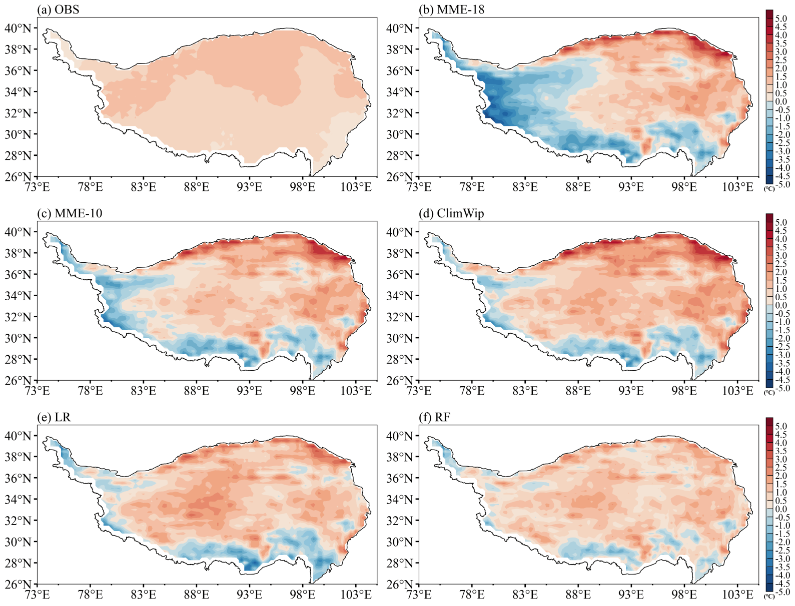
青藏高原1961–1994年与1995–2014年两个时期夏季近地面气温差值（后者减去前者）的空间分布，分别对应（a）观测、（b）MME-18、（d）MME-10、（f）ClimWIP、（h）LR和（i）RF。
Spatial distribution of the difference in summer SATs over the TP between the 1961–1994 and 1995– 2014 periods (the latter minus the former) for (a) observation, (b) MME-18, (d) MME-10, (f) ClimWIP, (h) LR, and (i) RF.
尽管基于不同多模式集合方法的历史模拟成功捕捉到了青藏高原大部分地区的增暖，但这些模拟错误地呈现出青藏高原西部和南部的降温，并明显高估了北部的增暖。
Although historical simulations based on different multi-model ensemble methods successfully capture the warming over most of the TP, they incorrectly produce cooling in the western and southern TP and considerably overestimate the warming in the northern TP.
这种差异在MME-18中最为明显（图7b）。
This discrepancy is most pronounced for the MME-18 (Fig. 7b).
MME-10也错误地模拟出了青藏高原西部和南部的降温，但相较于MME-18，其降温幅度有所减小（图7c），表明优选带来了改进。
The MME-10 also erroneously simulated cooling in western and southern TP but with reduced magnitude relative to the MME-18 (Fig. 7c), indicating improvement through optimal selection.
RF方法与整个青藏高原观测到的增暖最为一致，在西部和南部仅呈现出微弱、零散的降温，并且对北部增暖的高估最小（图7f）。
The RF method shows the best agreement with the observed warming over the entire TP, exhibiting only weak, scattered cooling in the western and southern TP and the slightest overestimation of warming over the northern TP (Fig. 7f).
总之，通过基于物理机制的观测约束与Taylor和IVS评分之间的相互验证，优选出10个CMIP6模式，再采用RF方法进行多模式集合，可有效降低历史模拟偏差，因此有望提供更可靠的青藏高原夏季近地面气温未来预估。
In summary, using the mutual verification between physics-based observational constraints and Taylor and IVS scores to optimally select 10 CMIP6 models, and then applying the RF method for multi-model ensemble, the outputs can effectively reduce historical simulation biases, and therefore are expected to provide more reliable future projections of summer TP SATs.
4. 不同排放情景下青藏高原夏季近地面气温变化的预估
4. Projected variations in summer TP SATs under different emission scenarios
我们采用RF方法和10个最优模式，预估并分析了SSP1-2.6、SSP2-4.5和SSP5-8.5情景下青藏高原夏季近地面气温的变化特征（图8）。
We employed the RF method with 10 optimal models to project and analyze the characteristics of summer SAT variation over the TP under the SSP1-2.6, SSP2-4.5, and SSP5-8.5 (Fig. 8).
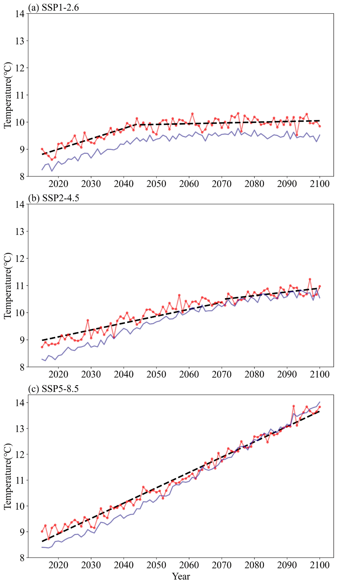
2015–2100年不同排放情景下青藏高原夏季近地面气温预估的时间序列：（a）SSP1-2.6、（b）SSP2-4.5、（c）SSP5-8.5。
Time series of projected summer TP SAT during 2015–2100 under different emission scenarios: (a) SSP1-2.6, (b) SSP2-4.5, (c) SSP5-8.5.
红线表示基于10个最优模式的RF预估，蓝线表示基于MME-18的预估。
The red lines represent the RF-based projection of 10 optimal models, and the blue lines represent the MME-18-based projection.
黑色点线表示线性趋势。
The black dotted lines denote the linear trends.
在SSP1-2.6情景下，青藏高原的增暖主要发生在初期。
Under SSP1-2.6, the warming in the TP primarily occurs in the early period.
2015–2044年，夏季近地面气温呈显著上升趋势，增暖速率约为0.38°C/10a（超过99%置信水平）（图8a）。
From 2015 to 2044, the summer SAT exhibits a significant upward trend, with a warming rate of approximately 0.38°C/10a (exceeding the 99% confidence level) (Fig. 8a).
这一增暖速率高于历史时期的速率（1961–2014年为0.25℃/10a）。
The warming rate is higher than the historical rate (0.25 ℃/10a for 1961 − 2014).
在未来中远期（2045–2100年），青藏高原近地面气温未呈现明确趋势（0.03℃/10a，不显著）。
In the mid- to long-term future (2045–2100), the TP SAT shows no clear trend (0.03 ℃/10a, insignificant).
与基于RF的预估相比，MME-18预估呈现系统性冷偏差（图8a），表明后者显著低估了青藏高原未来的增暖。
Compared to the RF-based projection, the MME-18 projection shows a systematic cold bias (Fig. 8a), indicating that the latter significantly underestimates the future warming of the TP.
鉴于基于RF的输出似乎更可靠，上述结果提示，青藏高原未来的增暖可能比MME-18预估的更为严重。
Given that the RF-based outputs appear more reliable, the above results suggest that the future warming over the TP may be more severe than the MME-18 projection.
在SSP2-4.5情景下，2015–2070年青藏高原近地面气温呈明显上升趋势（约0.33°C/10a，超过99%置信水平）（图8b）。
Under SSP2-4.5, the TP SAT exhibits a distinct upward trend during 2015–2070 (approximately 0.33°C/10a, exceeding the 99% confidence level) (Fig. 8b).
在未来远期（2071–2100年），增暖仍将持续，但速率放缓（约0.14°C/10a）。
During the long-term future (2071–2100), the warming persists but decelerates (approximately 0.14°C/10a).
2015–2070年，基于MME-18的预估存在明显冷偏差（比基于RF的预估低约0.39°C）。
The MME-18-based projection exhibits a clear cold bias during 2015–2070 (approximately 0.39°C lower than the RF-based projection).
2071–2100年，两种预估趋于更加一致。
During 2071–2100, the two projections tend to be more consistent.
在SSP5-8.5情景下，2015–2100年整个时期青藏高原近地面气温呈更明显且持续的上升趋势（0.60°C/10a）（图8c）。
Under SSP5-8.5, the TP SAT shows a more pronounced and sustained upward trend throughout 2015–2100 (0.60°C/10a) (Fig. 8c).
在这一情景下，MME-18也存在系统性冷偏差（比基于RF的预估低约0.34°C）（图8c）。
The MME-18 also exhibits a systematic cold bias under this scenario (approximately 0.34°C lower than the RF-based projection) (Fig. 8c).
2071–2100年，这一差异缩小到可忽略的程度（差值约0.02°C）。
This discrepancy diminishes to a negligible level during 2071–2100 (approximately 0.02°C difference).
图9展示了不同情景下未来近期（2025–2044年）、中期（2055–2074年）和远期（2081–2100年）夏季近地面气温异常的空间分布。
Figure 9 displays the spatial distribution of summer SAT anomalies for the early- (2025–2044), mid- (2055–2074), and long-term (2081–2100) future under different scenarios.
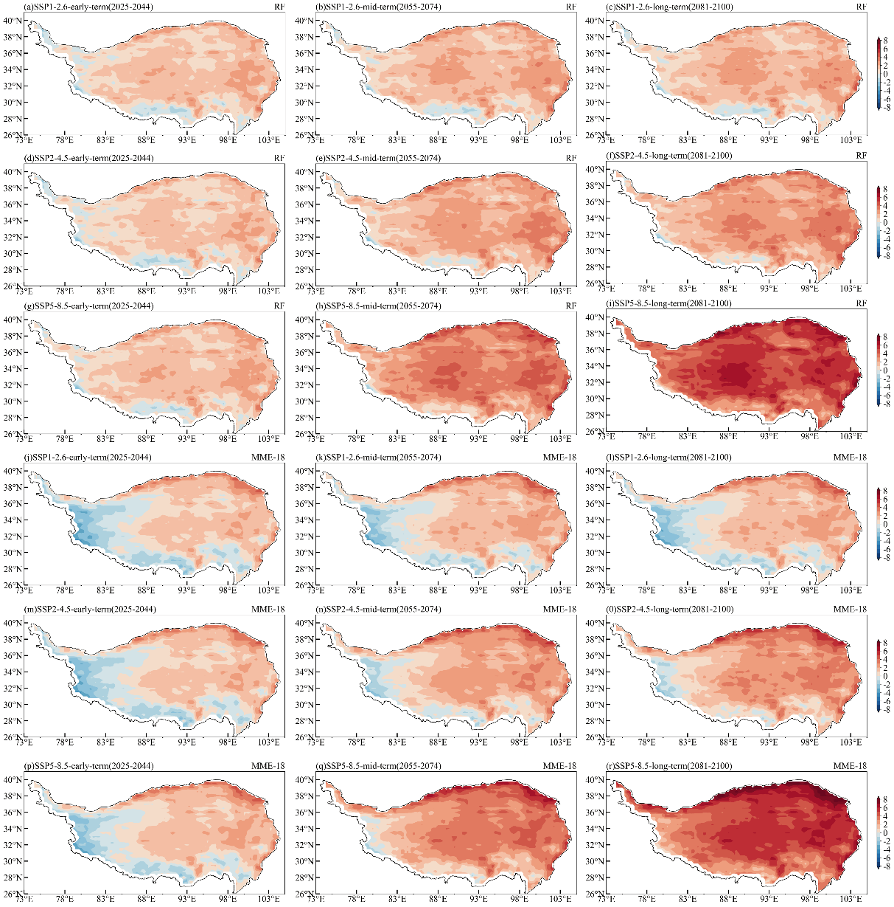
不同排放情景下，未来近期（2025–2044年）、中期（2055–2074年）和远期（2081–2100年）青藏高原夏季近地面气温异常的空间分布。
Spatial distributions of summer SAT anomalies over the TP for the early- (2025–2044), mid-(2055– 2074), and long-term (2081–2100) future periods under different emission scenarios.
分图（a）–（i）显示基于RF的预估，而（j）–（r）显示基于MME-18的预估。
Panels (a)–(i) show the RF-based projections, while (j)–(r) display the MME-18-based projections.
基于RF的预估表明，相对于基准期（1995–2014年），SSP1-2.6情景下青藏高原大部分地区在未来近期以增暖为主，升温幅度为1–2°C（图9a）。
The RF-based projections show that relative to the baseline period (1995–2014), the SSP1-2.6 scenario exhibits predominant warming across most TP regions in the early future, with temperature increases of 1–2°C (Fig. 9a).
在未来中期和远期，这些地区的升温幅度达到2–3°C（图9b、c）。
In mid- and long-term future, the increase reaches 2–3°C in these regions (Fig. 9b,c).
相比之下，在SSP1-2.6情景下，基于MME-18的预估显示青藏高原中部和东部的增暖相对较弱，西部甚至出现降温（图9j–l）。
In contrast, the MME-18-based projections show relatively weaker warming in central and eastern TP and even cooling in western TP under the SSP1-2.6 scenario (Fig. 9j-l).
在SSP2-4.5和SSP5-8.5情景下，也出现类似的西冷东暖形态（图9m–q），但SSP5-8.5情景下的未来远期除外（图9r）。
A similar west-cooling-east-warming pattern appears under SSP2-4.5 and SSP5-8.5 (Fig. 9m–q), except during the long-term future under SSP5-8.5 (Fig. 9r).
与MME-18相比，基于RF的预估显示出更强的增暖，尤其是在青藏高原西部，从而使整个青藏高原的增暖在空间上更加均匀（图9d–i）。
Compared to the MME-18, the RF-based projections demonstrate stronger warming, particularly in western TP, resulting in more spatially homogeneous warming throughout the entire TP (Fig. 9d–i).
这些发现表明，基于RF的预估主要减小了青藏高原西部的冷偏差。
These findings indicate that the RF-based projections primarily reduce the cold bias in western TP.
我们进一步考察了青藏高原西部（85°E以西）的增暖幅度，发现与MME-18相比，基于RF的预估显示出明显更强的增暖（图10）。
We further investigate the warming magnitude in the western TP (west of 85° E) and find that the RF-based projections show a much more dramatic warming compared to the MME-18 (Fig. 10).
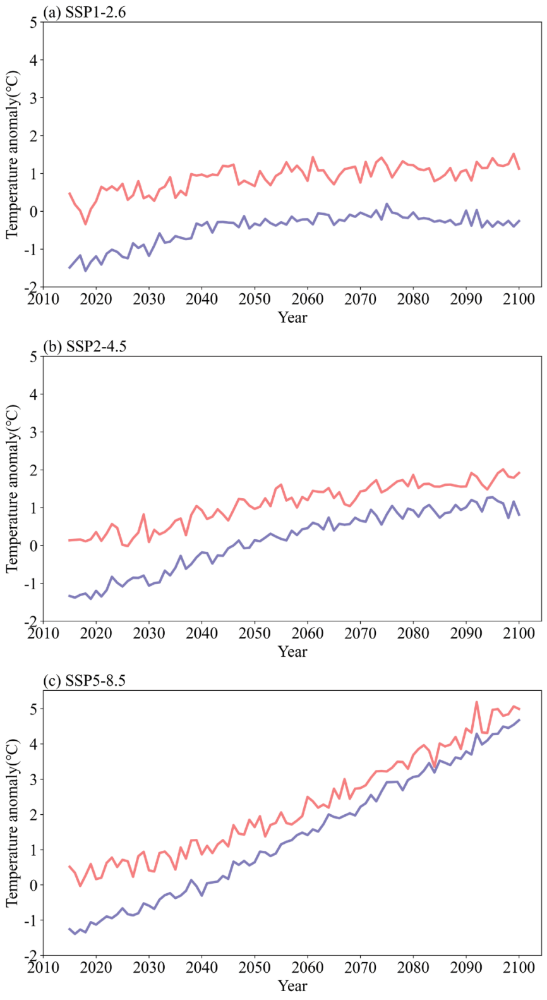
2015–2100年青藏高原西部（85°E以西）夏季近地面气温相对于1995–2014年观测基准的异常时间序列，分别对应不同排放情景：（a）SSP1-2.6、（b）SSP2-4.5、（c）SSP5-8.5。
Time series of anomalous summer SAT over the western TP (west of 85° E) for 2015–2100 relative to the observed 1995–2014 baseline, under different emission scenarios: (a) SSP1-2.6, (b) SSP2-4.5, (c) SSP5-8.5.
红线和蓝线分别表示基于RF（10个最优模式）和基于MME-18的预估。
The red and blue lines depict the RF-based (10 optimal models) and MME-18-based projections, respectively.
在SSP1-2.6情景下，基于RF的预估中，青藏高原西部近地面气温相对于1995–2014年基准期持续呈正异常，2045–2100年的平均增暖达到1.1°C（图10a）。
Under SSP1-2.6, the western TP SAT in the RF-based projections shows persistent positive anomalies relative to the 1995–2014 baseline, with mean warming reaching 1.1°C during 2045–2100 (Fig. 10a).
相比之下，基于MME-18的预估几乎始终低于这一基准（图10a中的蓝线）。
In contrast, the MME-18-based projections are almost always lower than this baseline (blue line in Fig. 10a).
在SSP2-4.5情景下，基于RF的预估也显示持续增暖（2071–2100年平均为1.66°C）（图10b）。
Under SSP2-4.5, the RF-based projections also show persistent warming (mean 1.66°C during 2071–2100) (Fig. 10b).
基于MME-18的预估直到21世纪40年代末仍低于基准，2071–2100年的平均增暖仅为较小的0.94°C（图10b）。
The MME-18-based projections remain below the baseline until the late 2040s, showing only modest mean warming of 0.94°C in 2071–2100 (Fig. 10b).
在SSP2-8.5情景下，基于MME-18的预估直到21世纪40年代初才超过观测基准（图10c中的蓝线），而基于RF的预估呈现更快的增暖趋势（图10c）。
Under SSP2-8.5, the MME-18-based projections do not exceed the observed baseline until the early 2040s (blue line in Fig. 10c), while the RF-based projections exhibit a more rapid warming trend (Fig. 10c).
鉴于青藏高原西部已经经历了显著增暖，在全球增暖背景下该地区未来出现降温似乎不太可能。
Given that western TP has already experienced significant warming, future cooling under global warming seems unlikely.
因此，基于RF的预估更为可靠。
Therefore, the RF-based projections are more reliable.
这些结果提示，青藏高原西部未来的增暖可能比基于MME-18的预估更为严重。
These results suggest that future warming in the western TP may be more severe than the MME-18-based projections.
5. 结论与讨论
5. Conclusions and discussion
准确预估青藏高原未来的增暖，对于当地生态和社会经济的可持续性至关重要。
Accurately projecting future TP warming is crucial for local ecological and socioeconomic sustainability.
本研究将对青藏高原近地面气温变化的直接评估，与由土壤湿度异常和海表温度异常共同影响青藏高原夏季近地面气温而建立的基于物理机制的观测约束相结合，评估了CMIP6模式。
This study evaluated CMIP6 models by combining direct assessment of TP SAT variations with physics-based observational constraints derived from the combined influence of soil moisture anomalies and SSTAs on summer TP SAT.
我们确定了最优模式和集合方法，以分析不同情景下的未来变化。
Optimal models and ensemble methods were identified to analyze future changes under different scenarios.
主要结论如下：
The main conclusions are as follows:
（1）通过将基于物理机制的观测约束与统计技巧评估（Taylor和IVS评分）相结合的相互验证，我们确定了10个最优模式。
(1) Using mutual verification combining physics-based observational constraints and statistical skill assessment (Taylor and IVS scores), we identified 10 optimal models.
在四种模式集合方法（MME、ClimWIP、LR和RF）中，我们发现RF方法有效减小了冷偏差，并准确模拟了青藏高原夏季近地面气温的气候态空间分布及多时间尺度（年代际和趋势）变化。
Among four model ensemble methods (MME, ClimWIP, LR, and RF), we found that the RF method effectively reduced the cold bias and accurately simulated the climatological spatial distribution and multi-scale (decadal and trend) temporal variations of summer TP SATs.
（2）基于最优模式的RF预估表明，青藏高原夏季将显著增暖，其增暖幅度和演变过程强烈依赖于排放情景。
(2) The RF-based projections with the optimal models show that significant summer TP warming, with its magnitude and evolution strongly dependent on the emission scenario.
在SSP1-2.6情景下，青藏高原在初期显著增暖（2015–2044年为0.38°C/十年），此后未呈现明确趋势。
Under SSP1-2.6, the TP exhibits significant early-term warming (0.38°C/decade during 2015–2044), with no clear trend thereafter.
在SSP2-4.5情景下，2015–2070年青藏高原近地面气温呈显著增暖趋势（0.33°C/10a），此后增暖趋势放缓（0.14°C/10a）。
Under SSP2-4.5, the TP SAT shows a significant warming trend (0.33°C/10a) during 2015–2070, and a slower warming trend (0.14°C/10a) afterwards.
在SSP5-8.5情景下，2015–2100年整个时期青藏高原近地面气温均呈显著增暖趋势（0.60°C/10a）。
Under SSP5-8.5, the TP SAT shows a significant warming trend (0.60°C/10a) throughout 2015–2100.
未经优化的、基于MME-18的预估系统性地低估了青藏高原的增暖，尤其是青藏高原西部的增暖。
The non-optimized MME-18-based projections systematically underestimated the TP warming, especially over western TP.
受约束的预估提示，未来的增暖，尤其是脆弱的青藏高原西部的增暖，可能比通常预估的更为严重。
The constrained projections suggest future warming, particularly in the vulnerable western TP, may be more severe than commonly projected.
Zhou和Zhang1采用最优指纹法，将青藏高原历史增暖归因于人为活动，尤其是温室气体强迫。
Using optimal fingerprinting, Zhou and Zhang1 attributed historical warming over the TP to anthropogenic activities, particularly greenhouse gas forcing.
将归因结果作为观测约束，预估的青藏高原增暖可能超过CMIP5多模式集合的预估1。
Using the attribution results as observational constraints, the predicted TP warming may exceed the CMIP5 multi-model ensemble1.
尽管本研究的约束条件与Zhou和Zhang1的研究不同，但结论一致，进一步支持了青藏高原未来可能出现更明显增暖的判断。
Although the constraint conditions in this study differ from Zhou and Zhang1, the conclusions are consistent, further supporting the likelihood of more pronounced future TP warming.
青藏高原持续且显著的增暖可能会提高当地土壤温度，加速冰川融化18,59，改变多年冻土60,61，增强蒸发，降低土壤湿度，并加剧草地退化和荒漠化62–64。
Sustained and significant warming in the TP would likely increase local soil temperatures, accelerate glacier melt18,59, alter permafrost60,61, enhance evaporation, reduce soil moisture, and exacerbate grassland degradation and desertification62–64.
青藏高原西部高海拔地区的夏季积雪覆盖，可影响中国东部的夏季降水异常65,66。
Summer snow cover in the high-altitude western TP can influence summer precipitation anomalies over eastern China65,66.
在更强的增暖下，积雪覆盖减少或消失可能显著改变中国东部的气候异常，这需要特别关注。
Under stronger warming, reduced or vanished snow cover could significantly alter climate anomalies in eastern China, which demands particular attention.
此外，欧洲土壤湿度异常对青藏高原夏季近地面气温起着关键调节作用。
Additionally, European soil moisture anomalies play a critical regulating role in summer TP SAT.
如果这一调节机制及其背后的物理约束仍保持完整，未来的极端增暖可能得到一定程度的缓解。
If the regulatory mechanism and its underlying physical constraint remain intact, future extreme warming could be somewhat mitigated.
这表明，应对气候变化离不开跨国和跨区域合作。
This suggests that multinational and multi-regional cooperation is essential to address climate change.
为增强气候韧性，应将区域气候影响和反馈效应纳入全球气候治理议程。
To enhance climate resilience, regional climate impacts and feedback effects should be integrated into global climate governance agendas.
声明
Declarations
作者贡献
Author Contribution
T.Z.和G.L.构思了本研究。
T.Z. and G.L. conceived the study.
T.Z.和G.L.开展了分析并解释了数据。
T.Z. and G.L. performed the analyses and interpreted the data.
T.Z.、G.L.和M.D.主导了论文写作，所有共同作者均提供了意见。
T.Z., G.L.and M.D. led the writing with input from all co-authors.
致谢
Acknowledgements
本研究由国家重点研发计划（资助编号2023YFF0805300）、西藏自治区重大科技项目（资助编号XZ202402ZD0006）、中国气象局青年创新团队“青藏高原气候变化及其影响”（资助编号CMA2023QN16）以及中国气象科学研究院（CAMS）基础研究基金（资助编号2023Z024）共同资助。
This work was jointly sponsored by the National Key Research and Development Program of China (Grant 2023YFF0805300), the Major Science and Technology project of the Xizang Autonomous Region (Grant XZ202402ZD0006), the Youth Innovation Team of China Meteorological Administration “Climate change and its impact in the Tibetan Plateau” (Grant CMA2023QN16), and the Basic Research Fund of CAMS (Grant 2023Z024).
我们感谢国家青藏高原科学数据中心提供青藏高原边界数据集（http://data.tpdc.ac.cn）。
We thank the National Tibetan Plateau Data Center for providing the Tibetan Plateau boundary dataset (http://data.tpdc.ac.cn).
数据可用性
Data Availability
CMIP6模式数据可从https://aims2.llnl.gov/search/cmip6/获取。
The CMIP6 model data is available from https://aims2.llnl.gov/search/cmip6/.
预印本补充材料 Preprint supplementary materials
以下为同一预印本v1的原始Word附件，不是期刊正式版补充材料。
方法
Methods
1. Taylor图与Taylor技巧评分（TSS）：
1. Taylor diagram and Taylor skill score (TSS):
Taylor图将相关系数（CC）、均方根误差（RMSE）和空间标准差比值（RSD）整合到极坐标图中，被认为是评估模式模拟性能的有效工具。
By integrating the correlation coefficient (CC), root mean square error (RMSE), and ratio of spatial standard deviation (RSD) into a polar coordinate plot, the Taylor diagram is considered an effective tool for evaluating the performance of model simulations.
TSS的公式如下：
The formula for the TSS is as follows:
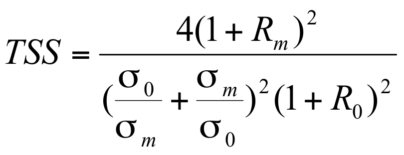
TSS = 4(1 + R_m)^2 / [((σ_0/σ_m) + (σ_m/σ_0))^2(1 + R_0)^2](1),TSS = 4(1 + R_m)^2 / [((σ_0/σ_m) + (σ_m/σ_0))^2(1 + R_0)^2](1),
其中，R_m为相关系数，R_0为最大相关系数（设为常数1），
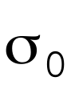
σ₀和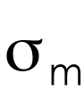
σₘ分别为观测和模拟的标准差。where R_m is the correlation coefficient, R_0 is the maximum correlation coefficient (set as a constant 1), and σ₀ and σₘ are the standard deviations of the observations and simulations, respectively.
TSS值越接近1，表明模拟与观测之间的一致性越好（Zhu et al 2020, Li et al 2021）。
A TSS value closer to 1 indicates better consistency between the simulations and observations (Zhu et al 2020, Li et al 2021).
2. 年际变率技巧评分（IVS）：
2. Interannual variability skill score (IVS):
IVS值按以下公式计算（Scherrer, 2011）：
The IVS value is calculated according to the following equation (Scherrer, 2011):
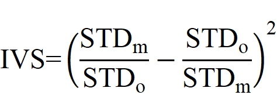
IVS = (STD_m / STD_o − STD_o / STD_m)^2IVS = (STD_m / STD_o − STD_o / STD_m)^2
其中，STD_o和STD_m分别表示观测数据和历史模拟数据的标准差。
where STD_o and STD_m denote the standard deviations of the observed and historically simulated data, respectively.
IVS值越低，表明模拟性能越好。
A lower IVS value indicates better simulation performance.
IVS已被有效应用于评估对青藏高原近地面气温年际变率的模拟（Peng et al 2022）。
The IVS has been effectively applied in evaluating the simulation of interannual variability of TP SAT (Peng et al 2022).
3. 四种多模式集合方法：
3. Four multi-model ensemble approaches:
（1）常规多模式集合平均（MME），对所有参与模式赋予相等权重（通常称为“模式民主”）。
(1) The conventional MME, which assigns equal weighting to all participating models (commonly called “model democracy”).
（2）基于独立性和性能的气候模式加权（ClimWIP），通过考虑每个模式的技巧（性能权重）和模式间独立性（独立性权重），为各模式赋予不同权重（Chen et al 2011, Knutti et al 2017, Sanderson et al 2015, 2017, Li et al 2021）。
(2) The climate model weighting by independence and performance (ClimWIP), which assigns different weights to each model by considering its skill (performance weight) and inter-model independence (independence weight) (Chen et al 2011, Knutti et al 2017, Sanderson et al 2015, 2017, Li et al 2021).
本研究利用青藏高原夏季近地面气温的平均气候态和趋势计算加权参数。
In this study, the weighting parameters were calculated using the mean climatology and trend of summer SAT over the TP.
（3）线性回归（LR），一种使误差平方和最小化的线性算法，特别适用于涉及多个模式或集合成员的回归问题（Li et al 2021）。
(3) The linear regression (LR), a linear algorithm that minimizes the sum of squared errors and is particularly suitable for regression problems involving multiple models or ensemble members (Li et al 2021).
（4）随机森林（RF），一种bagging算法，以决策树为估计器构建树的集合，用于解决分类或回归问题（Liaw and Wiener, 2002）。
(4) The random forest (RF), a bagging algorithm that uses decision trees as estimators to construct an ensemble of trees for solving classification or regression issues (Liaw and Wiener, 2002).
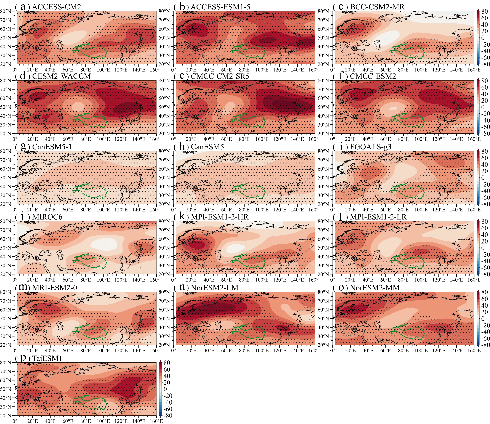
补充图1［原始内嵌图像］
Supplementary figure 1 [original native embedded image]
补充图1。
Supplementary figure 1.
基于CMIP6模式在1961–2014年期间的数据，将夏季200-hPa位势高度异常（彩色阴影；单位：gpm）对同期未经处理的青藏高原近地面气温指数进行回归所得的异常。
Anomalies of summer 200-hPa geopotential heights (color shadings; units: gpm) regressed against the concurrent raw TP SAT index, based on the CMIP6 models during 1961–2014.
在99.9%置信水平上显著的异常以点状阴影标示。
The anomalies significant at the 99.9% confidence level are stippled.
绿色等值线表示青藏高原（海拔3000 m）。
The green contours denote the TP (3000 m above sea level).
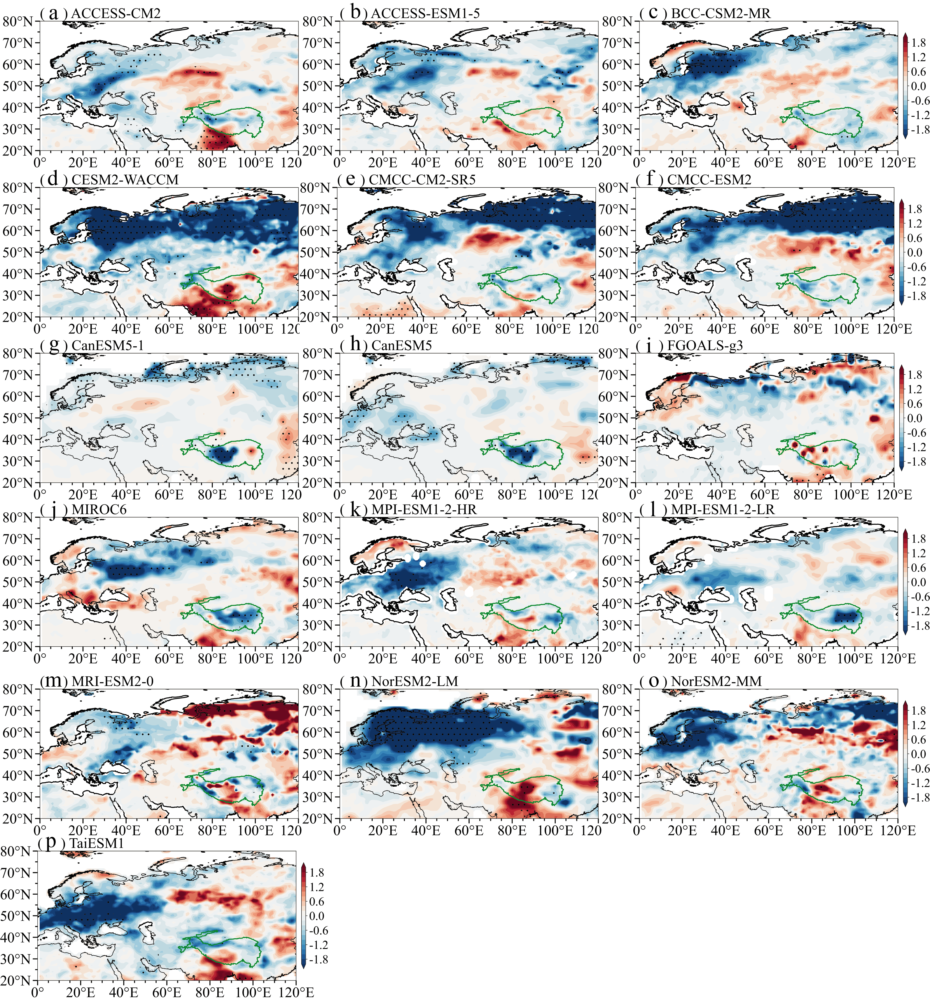
补充图2［原始内嵌图像］
Supplementary figure 2 [original native embedded image]
补充图2。
Supplementary figure 2.
同补充图1，但显示的是夏季土壤湿度异常。
As in Supplementary Figure 1, but for summer soil moisture anomalies.
在99.5%置信水平上显著的异常以点状阴影标示。
The anomalies significant at the 99.5% confidence level are stippled.
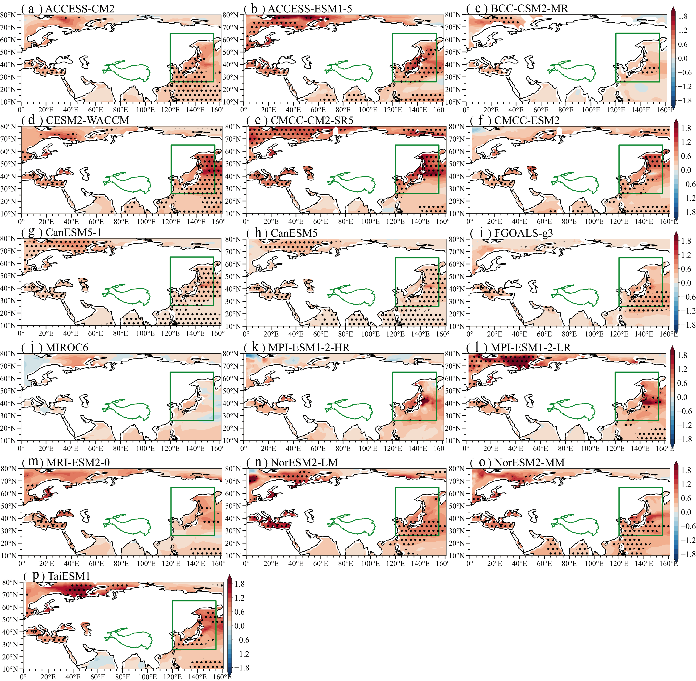
补充图3［原始内嵌图像］
Supplementary figure 3 [original native embedded image]
补充图3。
Supplementary figure 3.
同补充图1，但显示的是夏季海表温度异常。
As in supplementary figure 1, but for summer SSTAs.
绿色方框表示黄海—日本海区域。
The green box denotes the Yellow Sea–Japan Sea region.
在99.9%置信水平上显著的异常以点状阴影标示。
The anomalies significant at the 99.9% confidence level are stippled.